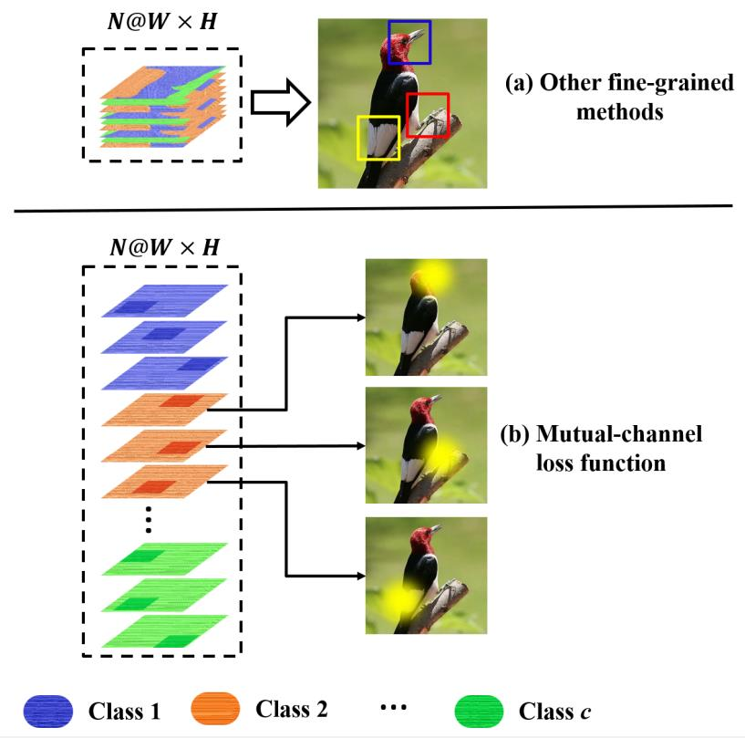
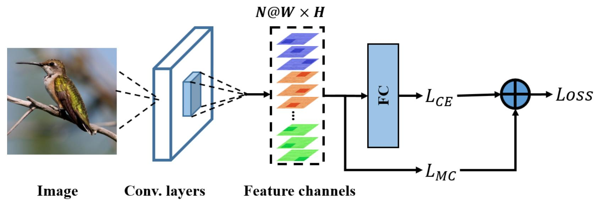
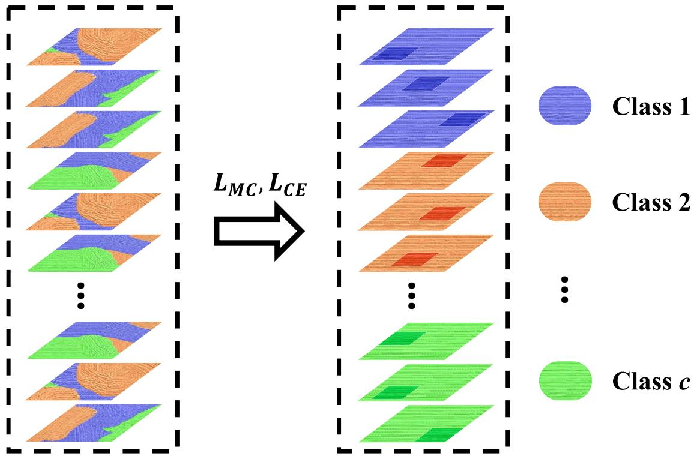
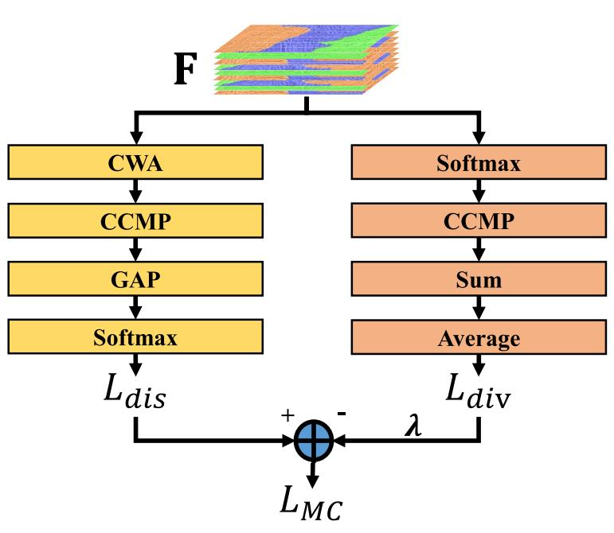
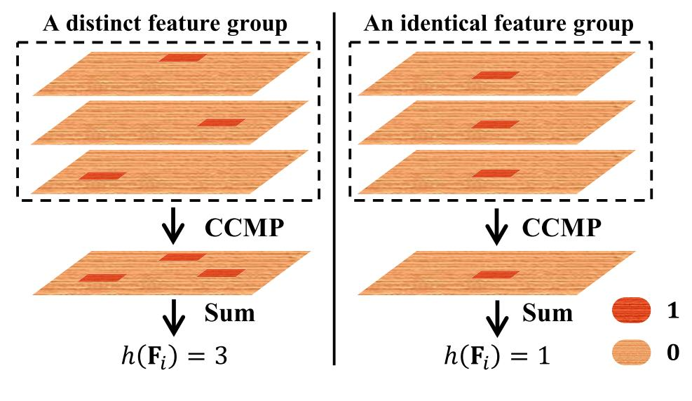
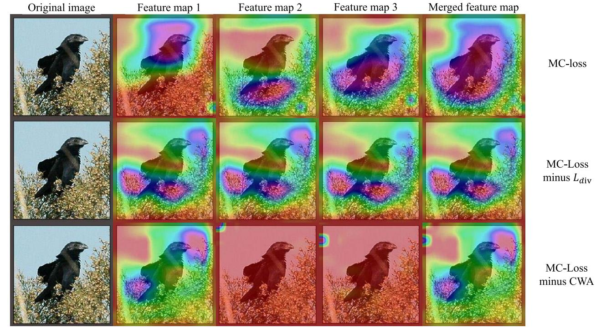
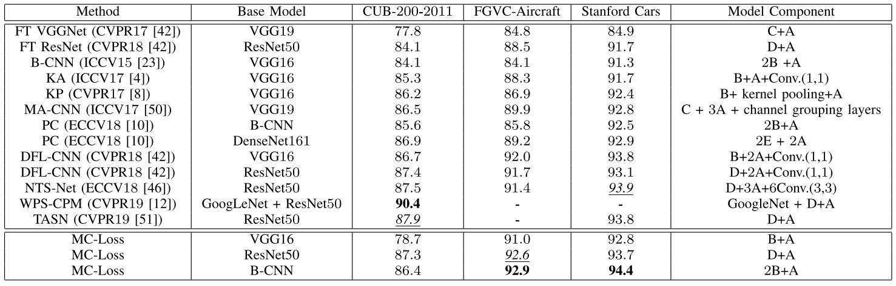

MC-Loss¶
综述¶
期刊与时间：IEEE Transactions on Image Processing 2020 (TIP 2020)
论文地址：https://arxiv.org/pdf/2002.04264
源码地址(PyTorch版本)：https://github.com/dongliangchang/Mutual-Channel-Loss
针对领域：细粒度图像分类(FGVC)
主要思想¶
细粒度分类任务中，由于类别间的视觉差异往往很微小，并且通常存在于局部细节中，因此从带有细微差异的局部细节中提取信息是解决细粒度分类的关键。早期的工作很大程度上依赖于对图片零件的标注，但由于人工注释获取非常麻烦，并且通常带有主观性，因此该方法不便于实际推广。因此，最近的研究都集中与以弱监督学习的方式发现零件区域，这些不需要人工额外标注的方法所达到的性能甚至要更好，因为它们可以挖掘人类标注框中不准确或者缺失的判别(discriminative)区域。为了准确有效地定位物体的辨识力部位，人们提出了越来越复杂的网络，这些网络大致都由两个组件构成：①执行部件检测的网络组件；②确保所学的特征具有最大区分度的组件。
本文中，作者提出了一种用于约束特征通道的通道交互损失(Mutual-Channel Loss, MC-Loss)，利用损失来同时实现判别特征(discriminative features)的定位和学习，直接在通道特征中研究细粒度的零件级特征(part-level features)，该方法具有如下两个好处：
- 不添加任何额外的网络参数和网络组件，便于训练；
- 可以很好地应用到现有的网络体系或者未来的网络结构中。
首先假设固定数量的特征通道来表示每一类，因此，作者并不是对最终的特征图施加约束，而是直接对特征通道施加约束，使得同一类别的所有特征通道具有如下两个特点：①属于同一类别的所有特征通道具有区分性，它们各自有助于将该类别与其他类别区分开来；②具有互斥性，即同类别中每个通道都关注不同的局部区域。因此，最终会得到一组类别对齐(class-aligned)的特征图，每个通道在相互不同的局部区域上具区别。其他方法与MC-Loss的对比如下图所示，MC-Loss中，蓝、红、绿分别表示不同的类别：

MC-Loss具体有两个组件构成，即判别组件(discriminality component)和多样性组件(diversity component)：
首先，判别组件强制让一个类别中所有的特征通道独立地预测相应的类别分数(类别概率)，如上图中，让三张红色特征图来预测右图中鸟的类别分数。训练过程中，引入一种新的注意力增强手段，通过随机屏蔽特定百分比的通道数量，迫使剩余的通道对给定的类别具有区分性，之后应用跨通道(cross-channel)最大池化来融合特征通道，并且生成最后具有类别对齐性质和最佳区分性的特征图。
虽然经过上述判别组件的优化，每个特征通道都只关注一个类别上的判别区域，但是会存在区域冗余的现象，即多个通道的特征图同时关注一个判别区域(具体可见后面的可视化分析)。因此，作者又设计了该损失的第二个组件——多样性组件，该组件可以让每组通道都关注不同的局部区域。可以通过降低属于同一类别通道之间的相关性来实现，即先再次应用跨通道最大池化，之后再最大化空间特征的求和数据。最终，可以确保尽可能多地判别部件(discriminative parts)得到关注。注意，如果没有判别组件，则网络不能很好地定位判别区域，最终会导致多样性组件损失无法正常收敛，因此，判别组件的应用是多样性组件工作的前提条件。
方法¶
网络结构¶
本文中，作者主要提出了通道交互损失函数来让网络有效地关注不同的判别区域，训练阶段的网络结构如下图所示：

给定一个输入图片，首先传入特征提取网络提取特征，得到特征图\mathcal F\in R^{N\times W\times H}，之后再将特征图分成c组，即N=c\times \xi，其中c和\xi分别表示类别数量和用于表示每个类别的通道数量，\xi是一个最好大于2的超参数，特征图\mathcal F第n个通道的特征向量表示为\mathcal F_n\in R^{WH}, n=1,2,\dots,N，注意，此时将每个通道的二维矩阵(尺寸为W\times H)转换成了一维向量(长度为WH)。对应于第i个类别的一组特征通道表示为F_i\in R^{\xi\times WH},i=0,1,\dots,c-1，具体可以表示为：

判别组件¶
在作者构建的框架中，每个类都由一些固定数量的特征通道表示，判别组件就是要强迫特征通道具有类别对齐性质，并且对应于特定类别的每个特征通道应该具有足够的判别性。因此，判别组件中的损失L_{dis}可以表示为：

1)CWA：当利用交叉熵损失去训练卷积神经网络时，特征通道只有一部分子集包含判别信息，并不是所有通道都包含判别信息，因此作者提出了全通道注意力操作，从而强制网络每个通道都同等地捕捉判别信息，使得一组通道\xi中所有的特征图都可以捕捉相应类别的判别信息。为所有的特征通道随机分配二进制权重，进一步在每次迭代过程中，从每个特征组F_i中只选择一部分特征通道进入后续的操作，这里类似于DropOut操作，即随机丢弃一部分特征数据，从而鼓励所有的特征图都具有激活信息。注意，CWA仅在训练过程中使用，测试过程中不使用MC-Loss模块，因此在训练与测试过程中，分类层均接受相同的数据。
2）CCMP：跨通道最大池化被用于计算对应于特定类别的F_i中每个特征通道上每个元素的最大响应，进一步得到与特定类别一致的一维WH大小的向量，比如：如果\xi=3，即三个通道表示一类，则经过CCMP之后，通道上的元素会按顺序逐个遍历，取相应的三个元素中的最大值，最后得到一个通道数据(上面的元素均是三个通道中相应位置的最大值)。跨通道平均池化(CCAP)是CCMP的替代方案，它仅用平均池化代替最大池化，但CCAP更倾向于在整个组中平均每个元素，有可能抑制特征通道的峰值，即抑制局部的关注区域。相反，CCMP可以保持这些关注，并且进一步发现对细粒度分类有用的信息。
3）GAP：全局平均池化用于计算每个特征通道的平均响应，最后返回维度大小为c的一维向量，其中每个元素代表一个单独的类。
GAP的输出再经过softmax函数得到预测概率，最后，使用交叉熵损失L_{CE}计算真实标签和预测概率之间的差异，得到判别组件的损失L_{dis}。
多样性组件¶
多样性组件主要是衡量特征通道之间的相似性，用于计算所有通道的总相似度。与其他常用的度量方法(如欧氏距离、K-L散度)相比，作者提出的方法在恒定复杂度的计算中计算开销更小。经过多样性组件损失的优化，可以使得一组特征F_i中的特征通道变得彼此不同，换句话说就是一个类的不同特征通道会聚焦关注图像的不同区域，而不是所有通道都关注一个最具有判别性的区域，因此它通过使每个组的特征通道多样化来减少冗余信息，并且有助于发现关于图像中不同类别的不同判别区域。该操作也称为跨通道去相关(decorrelation)操作，用于从同一张图片中的不同区域捕捉细节信息。首先依次经过softmax和CCMP，之后再进行空间维度求和来测量相交度，具体结构如上图的右侧分支，多样性损失L_{div}可以利用如下公式计算：
极端情况下，当一组特征图中关注的区域都不同时，L_{div}=\xi，如下图左侧的情况；当一组特征图中均关注同一个位置时，L_{div}=1，如下图右侧的情况。所以要最大化L_{div}结果，因此总损失中L_{div}的系数是负数。

需要注意的是，多样性组件损失不能单独用于优化网络，与判别组件损失相比，它充当的是一种正则化的作用，用于进一步约束网络来关注图像不同的判别区域。
实验¶
可视化分析¶
为了进一步说明MC-Loss的有效性，作者利用Grad-CAM来实现通道的可视化，具体对比如下图所示，基线模型为VGG16并且\xi=3，第一行可视化了利用MC-Loss优化网络得到的模型，从图中可以看出三种特征图均可以关注鸟类的不同判别区域；第二行可视化了只使用判别组件损失优化网络得到的模型，从中可以发现三张特征图学习到的判别区域往往彼此都很相似，存在很大的区域冗余问题，降低了细粒度分类能力；第三行可视化了不加CWA结构的MC-Loss损失，从中可以发现，如果移除CWA，则三个特征通道只有一个代表了正确的判别区域，其他的通道虽然彼此不同，但不一定对最终的分类有用。

精度对比¶

总结¶
本文提出了一种用于学习局部判别特征的损失函数——通道交互损失(MC-Loss)，该损失可以有效地驱动特征通道更具有区分性，并且让其聚焦于各个区域。更重要的是在不引入额外参数的前提下，可以将该损失应用到不同的网络架构中，提升网络的细粒度特征提取能力。
注：以上内容仅是笔者的个人观点，若有错误，欢迎大家批评指正。
最后一次修改日期：2021年12月31日